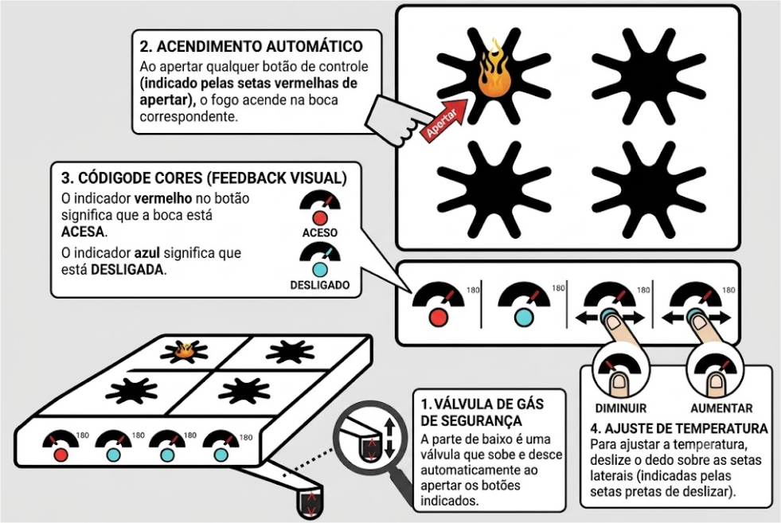

Focado em Design e Interfaces Inclusivas.

| Ação | Como fazer | Resultado Esperado |
|---|---|---|
| Ligar o fogo | Pressione o botão redondo da boca desejada. | O indicador exibirá o estado ACESO (●) ou DESLIGADO (○), acompanhado de mudança de cor e sinal sonoro. |
| Ajustar temperatura | Deslize o dedo no sensor touch lateral: para a direita aumenta e para a esquerda diminui a temperatura. | O indicador de temperatura será atualizado dinamicamente conforme o movimento do dedo. |
| Elevar o fogão | Pressione e mantenha pressionado o botão SUBIR (▲) localizado na parte inferior do fogão. | O pistão elevará o fogão de forma contínua até a altura desejada. |
| Abaixar o fogão | Pressione e mantenha pressionado o botão DESCER (▼) localizado na parte inferior do fogão. | O pistão reduzirá a altura do fogão de forma suave e controlada. |